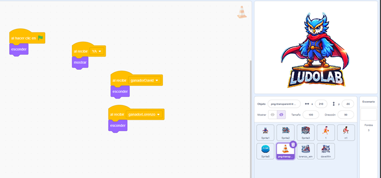
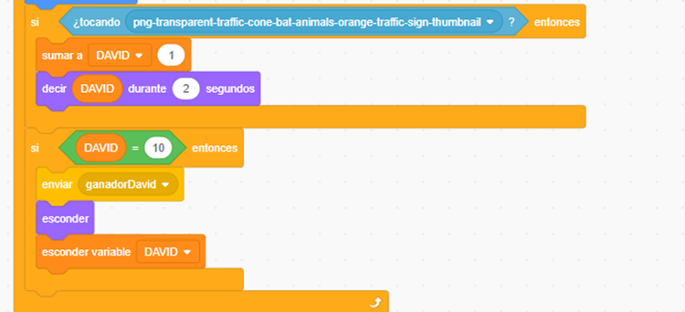
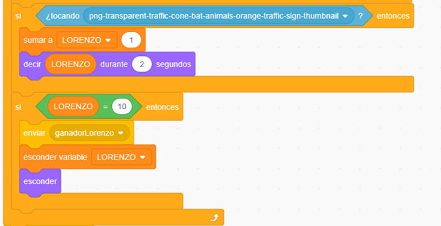

¡Registra Puntuaciones en tu Proyecto!
Es momento de agregar un sistema de puntuación para hacer que tu proyecto sea más interactivo y emocionante. Con esta funcionalidad, podrás registrar y mostrar los puntos acumulados mientras los personajes se mueven en el escenario.
¿Qué necesitas incluir?
- Al menos dos variables: Crea una variable para cada personaje que registre su conteo de puntos.
- Conteo de puntos: Configura las variables para que aumenten cada vez que los personajes cumplan con una acción específica, como moverse de un lado a otro.
¡Recuerda! El sistema de puntuación es una excelente forma de hacer que los jugadores se involucren más en el juego. Personaliza las acciones que otorgan puntos y sorprende a los usuarios con este nuevo nivel de interactividad.
¿Estás listo para implementar este desafío? ¡Manos a la obra y convierte tu proyecto en un juego más competitivo y divertido!
Retroalimentación
En esta etapa, hemos implementado un sistema de puntuación utilizando variables para registrar los puntos acumulados por los personajes. Este mecanismo se activa cuando los personajes interactúan con un objeto específico en el escenario.

Como se muestra en la ilustración, hemos utilizado un objeto en forma de cono como punto de referencia. Cuando alguno de los personajes colisiona con este objeto, se envía un mensaje para registrar la interacción y determinar si hay un ganador.

En esta ilustración, se observan los bloques utilizados para incrementar el contador de puntos cuando un personaje colisiona con el cono. Este diseño permite registrar y visualizar el progreso del personaje en tiempo real.

Para el segundo personaje, se implementó un diseño similar, asegurando que ambos personajes tengan un sistema de puntuación funcional e independiente.
¡Excelente trabajo! Con esta funcionalidad, has logrado que tu proyecto sea más interactivo y competitivo. Sigue explorando nuevas ideas para mejorar la experiencia del usuario y llevar tus proyectos a un nivel aún más creativo. ¡Sigue adelante!